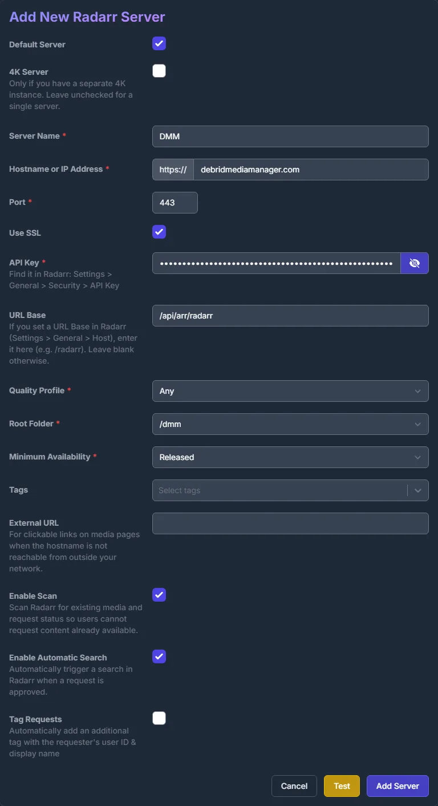
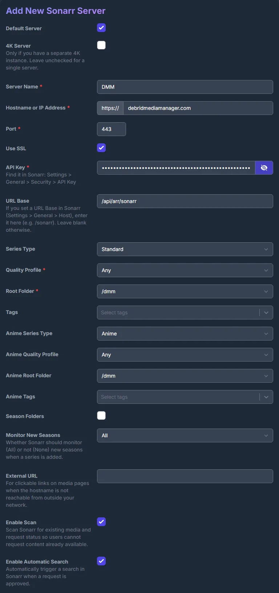
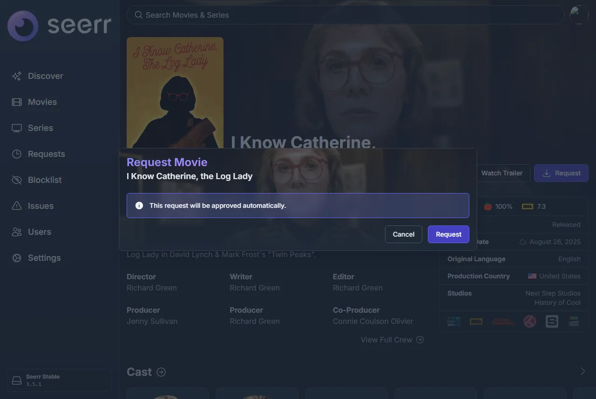
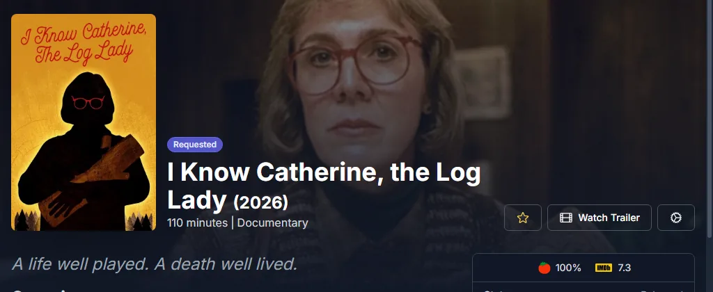
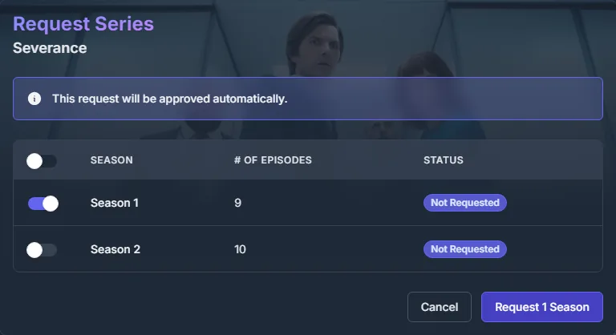
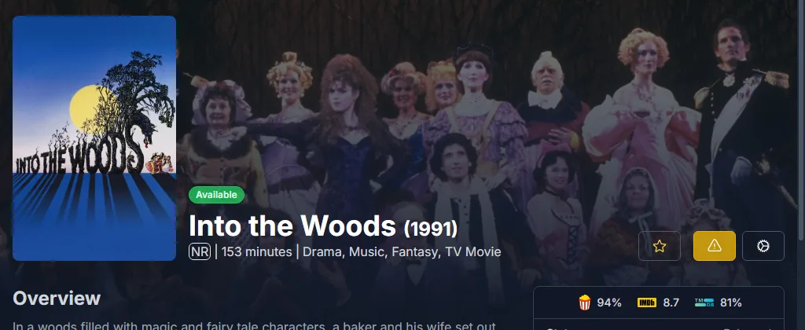

通过 DMM 使用 Seerr
把 DMM 添加到 Seerr 中，作为 Radarr 和 Sonarr 使用。已批准的请求会进入你的 DMM 想看列表，由 zurg 去获取。你不需要 Radarr 或 Sonarr。Seerr 只需要能访问 debridmediamanager.com。Overseerr 和 Jellyseerr 的工作方式相同。
此功能面向赞助者。Seerr 使用来自 gatekeeper 的 DMM API 密钥进行登录。
你需要准备
- zurg 读取你的想看列表，需要在
config.yml中配置dmm_api_key。参见 获取 DMM 中的想看内容。 - 将 Seerr 与你的 Plex、Jellyfin 或 Emby 服务器配置好，这样它就能知道你已经有哪些剧集。
将 DMM 添加为 Radarr
在 Seerr 中打开 Settings → Services，然后点击 Add Radarr Server。按下面的方式填写：
点击 Test。连接成功后，Quality Profile 选 Any，Root Folder 选 /dmm。 Minimum Availability 保持默认。勾选 Enable Scan，然后点击 Add Server。

如果 Test 失败，检查一下密钥：它就是 DMM 的 设置页面上显示的那个。另外，你的赞助过期后，DMM 也会拒绝这个密钥。
将 DMM 添加为 Sonarr
按下 Add Sonarr Server，并把 URL Base 填成 /api/arr/sonarr。点 Test 之后，在配置文件（profiles）和根文件夹（root folders）里都选 Any，再选 /dmm。勾选 Enable Scan，然后按 Add Server。

请求
请像平时一样发起请求。获批的电影会进入你的想看列表：


对于剧集，请选择你想要的季。之后的请求可以添加更多季。要跟踪整部剧（包括之后新增的季），请在其 DMM 页面上按下 Want all seasons。

你的想看列表会在几秒内显示每个标题。zurg 会在一分钟内将其取走。
Seerr 显示的内容
Seerr 每天会在 Radarr Scan 和 Sonarr Scan 中读取一次 DMM 的列表。要立即运行它们，请打开 Settings → Jobs & Cache，然后在每一项旁边点击 Run Now。
-
电影：zurg 获取到后，会显示为 Available。

-
剧集：在其剧集进入你的 Plex、Jellyfin 或 Emby 媒体库，并且 Seerr 对该服务器的扫描找到它们之前，会一直显示为 Processing。DMM 不知道 zurg 持有哪些剧集。
删除标题
在 Seerr 中打开该标题，点击齿轮按钮，然后选择 Remove from Radarr（或 Remove from Sonarr）。这样会将其从你的想看列表中移除。zurg 已经获取的内容仍会保留在你的媒体库中。旁边的 Open in Radarr 会在 DMM 上打开该标题。
遇到问题？请在 Discord 的 dmm-support 论坛中提问。获取帮助 中说明了需要提供哪些信息。
通过 DMM 使用 Seerr，还是使用 zurg 自带的 Seerr 源
zurg 也可以直接读取 Seerr，使用 seerr 来源。
二者选其一，不要同时使用：
- 通过 DMM：Seerr 只需要能访问互联网，请求会显示在你的想看列表中，与你用 Want 添加的内容并列。Seerr 每天的扫描会把 zurg 已获取的影片标记为可用。
- zurg 自己的来源：可以把 4K 请求与 1080p 请求区分开来，但 zurg 必须能够访问 Seerr。